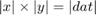
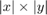
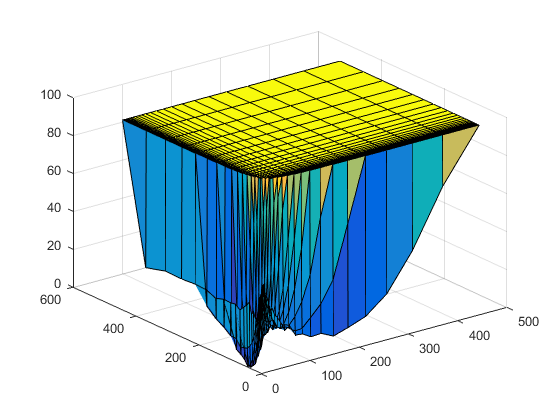
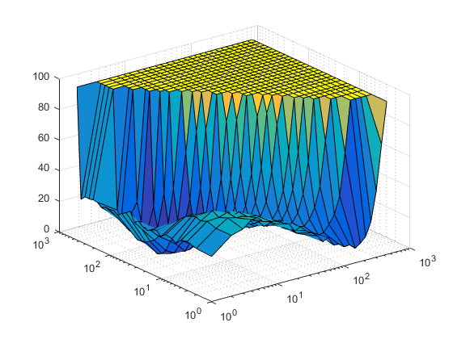
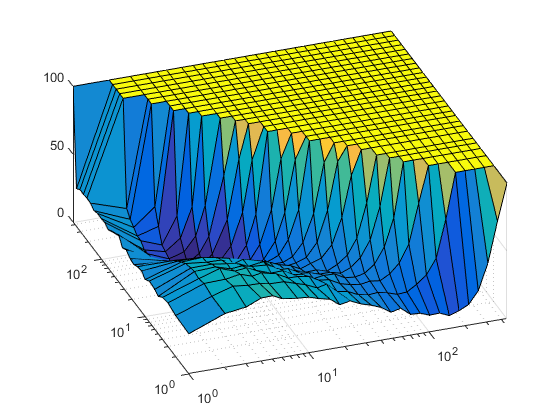
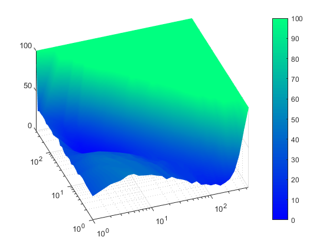
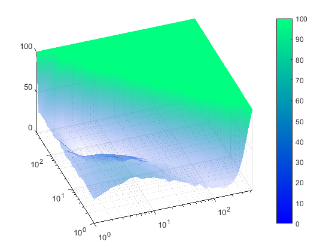

3-D Surface Map for CSV data
A brief introduction to loading and displaying a multivariate dataset loaded from a 3 column comma-seperated values file (.csv).
This example was generated and written in MATLAB R2016b, and has not been tested in any other version.
Contents
Loading the CSV file
The function csvread() is an inbuilt function that will read the numeric rows of a CSV file into a column matrix. Note that it cannot read text entries, and will fail, so you should specify the row that the numeric data starts. In the example data, this is the second row (indexed at 1), e.g.
0 firstPhaseRestarts,firstPhaseTime,result 1 1,1,29.65739688 2 1,2,30.30167637 . . .
rstart = 1; % Starting row = 1 dat = csvread('example_data.csv',rstart);
Reshape the data
For coordinate (or equivalent) data, such that the first and second rows of the dat represent independent variables, subsequently referenced as x ( X ) and y ( Y ) respectively, a rectilinear coordinate space is assumed, and there a vector of unique x and y values  as indicated by the following assert.
nx = length(unique(dat(:,1))); ny = length(unique(dat(:,2))); assert(nx*ny == length(dat));
In a rectilinear grid, it is then possible to sort the data, first by x and then by y, which allows for easy reshaping of dat into a set of matrices of size . Shaping the dependent variable (assumed to be the values in the 3rd column) in this form allows for a matrix based surface representation.
dat = sortrows(dat,[1 2]); % Sort dat rows by 1st column then by 2nd
X = reshape(dat(:,1),[nx ny]);
Y = reshape(dat(:,2),[nx ny]);
Z = reshape(dat(:,3),[nx ny]);
Creating the plot
It is quite simple now to represent the data as a 3D plot, using the surf function. Variable h represents the handle to the surf, used later for styling
h = surf(X,Y,Z);
Styling the plot
It's clear from the plot that the axis scale should be logarithmed, so it's desirable to adjust the axis scaling. To edit the axes, the properties can be editted programatically, or through the Property Editor in the Figure window, via Tools > Edit Plot.
A list of Axes properties is available here.
g = gca; % 'gca' returns the handle for the current Axes Object g.XScale = 'log'; g.YScale = 'log';
To change scaling and view of the axes, there are various controls. For example, it is often desirable to set the axes limits to show the limits of the data. Programmatically setting the view direction of the plot, especially in the case of 3-D plots, can be helpful in manually creating multiple plots that are viewed from the same angle. It is possible to manually shape the view using the Rotate 3D Tool in the Figure window, and gain azimuthal and elevation angles of the camera: [az,el] = view; These can be used to then set the view dynamically.
axis tight view(-20,50); % view(az,el);
Choosing a colour map is important in highlighting the features of a plot. It is easy to set the colour map using any preset map (defined in colormap) or by manually creating a 3xN column matrix of RGB values (scaled 0-1). To add the colour bar to the plot, simply add the colorbar line.
To change the nature of the shading, such that face colour is smooth, rather than flat, the face colour should be set to be interpolated. Setting h.EdgeColor to 'none' will prevent edges being displayed.
colormap winter % Set colour map colorbar % Show colour bar h.FaceColor = 'interp'; h.EdgeColor = 'none';
In some circumstances, transparency makes for pretty plotting. However sometimes this doesn't translate well onto paper (literally). Use with discretion.
FaceAlpha describes the 'alpha channel' of each face on the surface (i.e. opacity, 0 = invisible, 1 = fully opaque). This needs to be interpolated when FaceColor is set to 'interp'. The function alpha() sets the alpha value per Z coordinate (so needs to be a matrix of size(Z)
h.FaceAlpha = 'interp'; alpha(h,Z); % depth-scaled opacity % Alternatively (for constant 50\% opacity): % alpha(h,0.5*ones(size(Z));
Save me
To save the figure programmatically use saveas). Alternatively, use the Figure window (File > Save As...).
f = gcf; % 'gcf' returns the handle for the current Figure Object saveas(f,'example_surface.png') % save the current Figure as '.png' saveas(f,'example_surface.eps') % save the current Figure as '.eps' close(f)